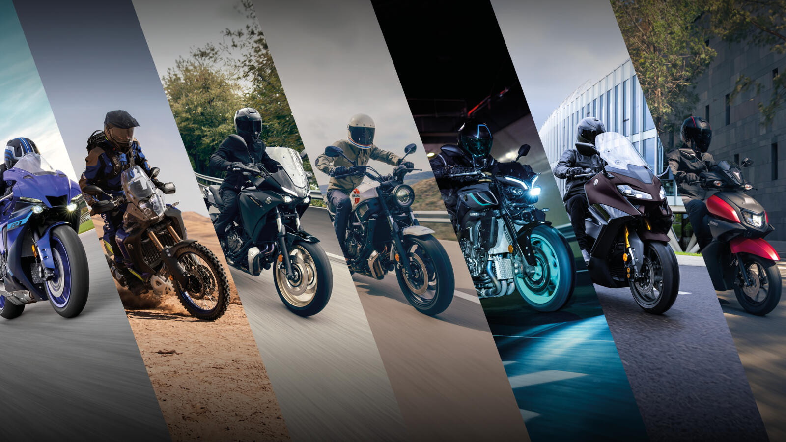

EL MUNDO DE LAS MOTOS CONMIGO
EL MUNDO DE LAS MOTOS CONMIGO
Ven a conocer las partes de una moto
Esta es la pasión de las motos
Las motos son vehículos de dos ruedas que dan velocidad, libertad. Son perfectos para moverte rápido para cualquier lugar, sentir el viento en la cara y disfrutar de las vistas. Hay para todos
los gustos: desde las pequeñas y económicas, ideales para el día a día, hasta las potentes deportivas para los amantes de la adrenalina y al sin miedo. Además, gastan menos gasolina y ocupan menos espacio que un coche.
¡Subirte a una moto es una pasión increible!

Aquí aprenderas todo lo que necesites para saber sobre tu pasatiempo o
de tus gustos hacia las motos
Quedate y sigue leyendo. Te gustará!
Tipos de moto
- Motos deportivas
- Son conocidas como motos de racing
- Motos de Chopper
- También conocidas como motos de Custom
- Motos naked
- Motos de cross
- O también llamadas como moto de enduro
- Motos de aventura
- Son conocidas como moto trail o todo terreno
- Motos scooter
- Ciclomotores
- También llamadas como la 49